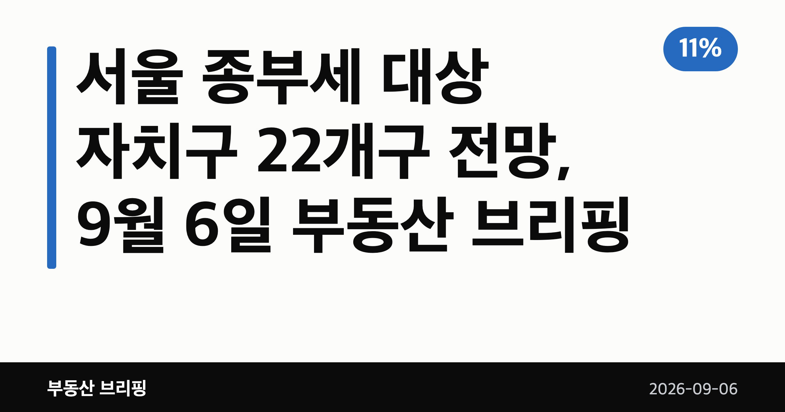
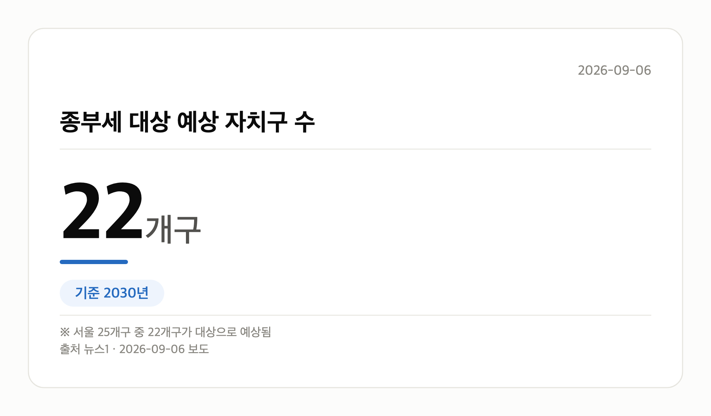
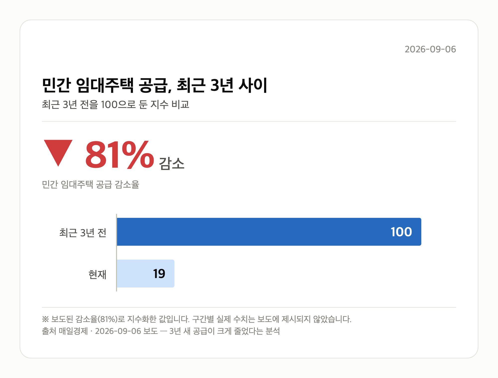

📷 대표 이미지 — 검색 목록에 이 그림이 썸네일로 뜹니다
→ 파일 img-0-cover.png 을 글 맨 위에 올리고 상자는 지웁니다

이 글은 2026년 9월 6일 기준으로 정리한 내용입니다.
3줄 요약- 집값 연 11% 상승 가정 시 2030년 전망 분석
- 서울 25개구 중 22개구 종부세권, 3개구만 제외
- 가정 전제인 만큼 실제 집값 흐름을 함께 봐야
이 글의 순서- 서울 종부세 대상 자치구는 어디인가
- 서울 종부세 대상 자치구 확산이 뜻하는 것
- 그 밖의 오늘 소식
- 오늘의 체크포인트
낯선 말 풀이- 공시가격 — 정부가 매년 정하는 집값. 세금과 건강보험료를 매기는 기준이 된다
- 종합부동산세 — 가진 집들의 공시가격 합이 기준을 넘으면 재산세와 별도로 더 내는 세금
- 임대사업자 — 집을 세놓는 것을 사업으로 등록한 사람이나 법인
오늘의 숫자
11%
가정 집값 상승률
연간 | 149㎡ 이하
건설임대 종부세 합산배제 요건-전용면적
건설 임대사업자 종부세 합산배제 신청 요건 | 4조원
롯데건설 올해 도시정비사업 누적 수주액
2026년(올해) |
집값이 매년 11%씩 오른다는 가정 아래, 2030년에는 서울 종부세 대상 자치구가 22곳까지 늘어날 수 있다는 분석이 나왔습니다. 종부세(주택 공시가격 합계가 기준을 넘으면 내는 종합부동산세)는 그동안 강남권 고가주택 이야기로 여겨졌는데요.
이 전망대로라면 비강남권까지 넓어진다는 뜻입니다. 다만 어디까지나 '가정'에 기댄 숫자라는 점을 먼저 말씀드립니다.
서울 종부세 대상 자치구는 어디인가
뉴스1 등 보도에 따르면 서울 25개구 가운데 22개구가 과세 대상에 들어가고, 강북구·금천구·도봉구 3개구만 빠지는 것으로 나타났습니다.
전제는 서울 집값이 해마다 11%씩 오른다는 가정입니다. 이 전제가 달라지면 결과도 함께 달라집니다.
| 구분 |
수치 |
시점 |
| 가정 집값 상승률 |
연 11% |
매년 |
| 종부세 대상 예상 자치구 |
22개구 |
2030년 |
| 제외 예상 자치구 |
3개구(강북·금천·도봉) |
2030년 |
📷 이미지 — 2030년 서울 25개구 중 종부세 대상으로 예상되는 자치구 수 22개구를 보여주는 그래픽
→ 파일 img-1-stat-card.png 을 이 자리에 올리고 상자는 지웁니다

서울 종부세 대상 자치구 확산이 뜻하는 것
지금까지 종부세는 고가주택 보유자의 부담으로 인식돼 왔습니다. 과세 대상이 서울 전역으로 넓어지면 비강남권 주택을 가진 분들도 부담 대상이 될 수 있다는 의미입니다.
다만 매일경제 보도로 나온 이 분석은 연 11% 상승이라는 가정을 깔고 있습니다. 정부의 종부세 개편안이 실제로 어떻게 적용되는지는 기사 본문이 확인되지 않아 아직 불분명합니다.
📷 이미지 — 서울 아파트 단지가 밀집한 도심 전경 사진
그래서 지금은 서울 종부세 대상 자치구 전망 자체보다, 내 아파트 공시가격이 어떤 속도로 움직이는지를 확인하는 편이 현실적입니다.
그 밖의 오늘 소식
- 정부, 법인형 임대사업자 종부세 합산배제 완화 검토 중
- 건설임대는 전용 149㎡·공시지가 12억원 이하 요건 적용
- 업계: 종부세 부과 시 임대수익률 5%에서 1~2%로 하락
- 민간 임대주택 공급, 최근 3년 새 81% 감소(매일경제)
- 롯데건설, 도곡우성 재건축 수주로 올해 정비사업 4조원 돌파
- 민간 임대 공급 촉진 정책 패키지 연내 발표 예고
📷 이미지 — 최근 3년 민간 임대주택 공급 감소율 81%를 보여주는 그래픽
→ 파일 img-3-index-comparison.png 을 이 자리에 올리고 상자는 지웁니다

오늘의 체크포인트
- 서울 종부세 대상 자치구 22개구 전망은 연 11% 상승 가정치입니다.
- 제외 예상 지역은 강북구·금천구·도봉구 3곳으로 언급됐습니다.
- 임대 공급 81% 감소가 겹치며 연내 정책 패키지가 관전 포인트입니다.
그래서 나는?- 서울 1주택자라면, 내 아파트 공시가격 변동부터 확인해 보세요
- 전세 계약을 앞뒀다면, 연내 발표될 임대 정책 패키지를 지켜보세요
- 재건축 조합원이라면, 시공사 선정 후 사업 일정을 살펴보세요
여러분이 살고 계신 자치구는 이번 전망에서 어느 쪽에 들어가 있었나요?
댓글로 알려 주시면 다음 글에 반영하겠습니다.
#부동산 #아파트 #종부세 #종합부동산세 #서울 #서울아파트 #서울아파트값 #서울종부세 #종부세대상자치구 #강북구 #금천구 #도봉구 #보유세 #공시가격 #1주택자 #다주택자 #부동산세금 #부동산정책 #전월세 #전세 #월세 #임대주택 #임대사업자 #기업형임대 #리츠 #재건축 #도시정비사업 #롯데건설 #도곡우성 #부동산브리핑